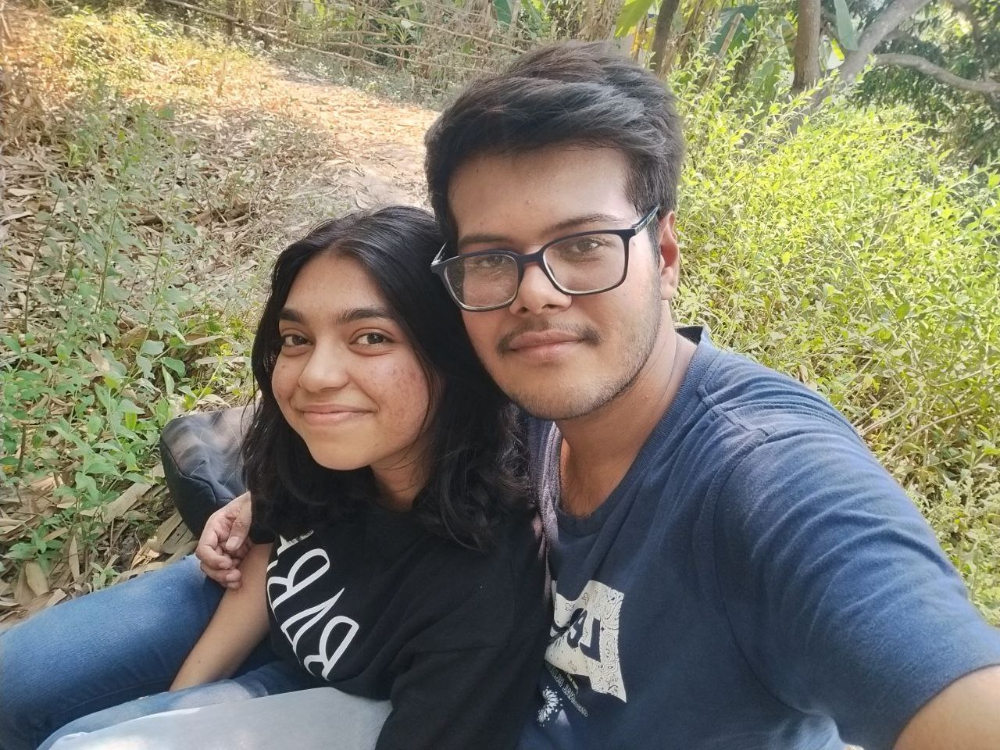

About My Kiwi♡ Baby💖
Somasree Nandi is a girl who came to my life on "17/12/2024". On "28/12/2024" we had our first conversation over call 🎀. On "31/12/2024" we had our first video call 💖. On "01/01/25" we came into relationship ❤️🩹. She is my girlfriend 😌. She is my bestfriend 😄. She is my happiness 😁. She is my life 🫶🏻. She is beautiful 😍. She is the one person I adore and love a lot 💗. She is smart, elegant, sexy and hot 🥵🤤. She is that one person who randomly came into my life and found a place in my heart and she is slowly healing that lil boy who was lost inside of me ❤️🩹. She is my whole world 🌍.
Positives
- She thinks for everyone's happiness. She is kind 🫂.
- She is sensitive, which is wrong I know but that is her feelings and that is good. I respect and adore that ❤.
- She is health conscious which is understandable her past experience might have made her this way but as time passes by i will try my best to heal her inner child that got lost somewhere inside of her 🤞🏻.
- She is a perfect wife material. She expends her love, effort and care for me. Moreover she gives me most of her time too. Despite knowing this I crave for more, ya I am childish in this point I know. She is loyal to me 😌.
- She is beautiful 💓.
- She has a sexy body 🫣.
- She sleeps nicely and properly, gets enough rest. Wakes up early too on time not like most kids who sleep late and wakes up after 9 AM 💞.
- She has cried for me showing her love for me. Her actions proves her love for me. Even tho I have done countless stupidity in public, she has always chosen to stick by me and stay with me, love me and adore me ❤️🩹.
Negatives
- She is kind. This is a negative point because that kind nature of her's gets her blackmailed and a lot of pain at times 😤.
- She let's other people's (not her loved ones) words get to her 😑.
- She is way too health concious. DO NOTE : She is not now that much and I love that still she is eating less for the past couple of days 🥴.
- She sometimes does not tell me everything (Less transparency) 😒.
- She does not talk with my mother even when she picks her phone call or she comes in video call. Does not greet her 😞.
- She does not take proper care of herself. She has really bad routine (eating, bathing and doing chores) 😠.
She is a gem in this cursed world 💎 Need to protect her at all costs 🫠. She became an irreplaceable person in my heart in my life 🫂💝. I love her a lot ♾️❤️.
